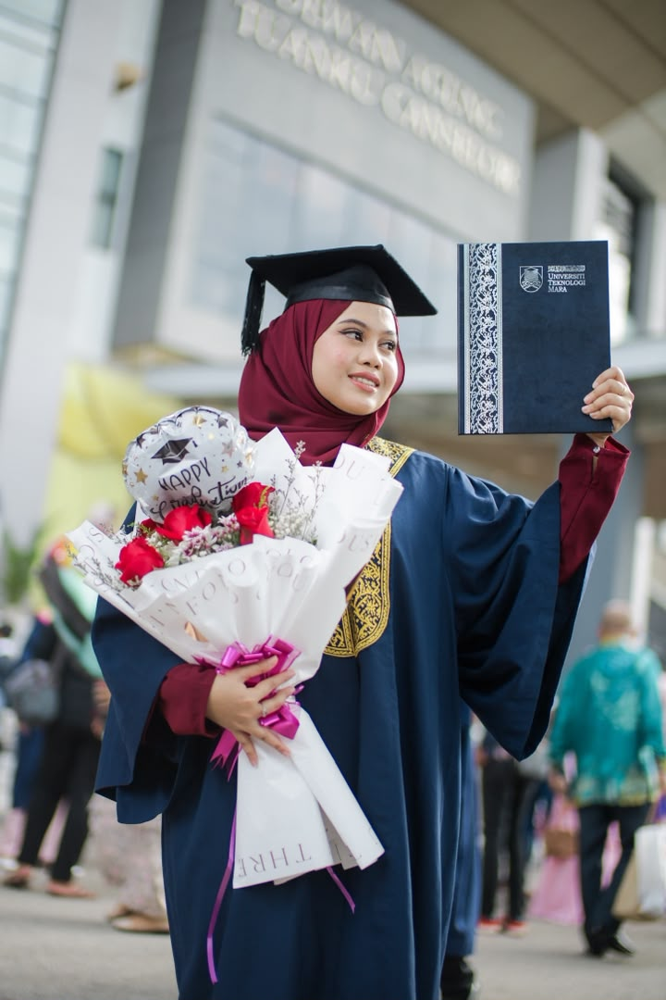

Creative Mind
Designing ideas into meaningful visuals.
Hi, I'm Dalilah, an Information Technology student majoring in Multimedia Technology at Universiti Malaysia Sabah (UMS), Labuan International Campus.
I have a passion for exploring the creative side of technology, particularly in multimedia design, interactive web development, and digital creativity. I enjoy turning ideas into meaningful digital experiences through innovation and technology.
Explore My Work ➜
Bachelor of Information Technology
(Multimedia)
Designing ideas into meaningful visuals.
Exploring web and multimedia tools.
Growing through every new project.